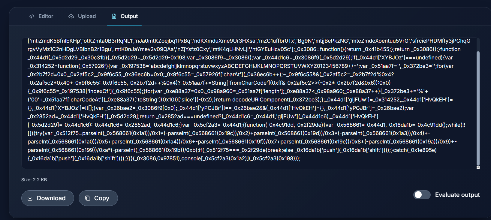

JavaScript Deobfuscation
Packing JavaScript code
packer turns all words into a list of dictionary and then uses function(p,a,c,k,e,d) to rebuild the original code to execute, a tool we can refer is https://beautifytools.com/javascript-obfuscator.php. Although this technique makes code harder to read, it still reveals some important strings in cleartext. Therefore, we need a more complicated obsfucation technique.
More advanced tools
https://obfuscator.io/legacy-playground

This type of obfuscation includes many techniques: String Array, Decoding, Identifier Renaming, Control Flow Obfuscation
Deobfuscation
Using such useful tools: